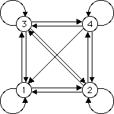

| In the standard IFS formalism, all combinations of transformations are allowed. By allowing only certain combinations, we open the possibility of generating many, many more images. |
| Every combination that is not allowed is forbidden, so it suffices to specify either the allowed or the forbidden combinations. |
| Note that if |
| Consequently, the simplest IFS with memory is specified by forbidden pairs, equivalently, by allowed pairs. |
| For our transformations T1, T2, T3, and T4, this information can be represented visually by a graph. |
| The graph has |
|
|
| For example, this graph |
|  |
| specifies that T1 cannot be followed immediately by T4, because the graph has no arrow from vertex 1 to vertex 4. |
| All other combinations are allowed, so all other pairs of edges are connected by arrows. |
Return to background directory.